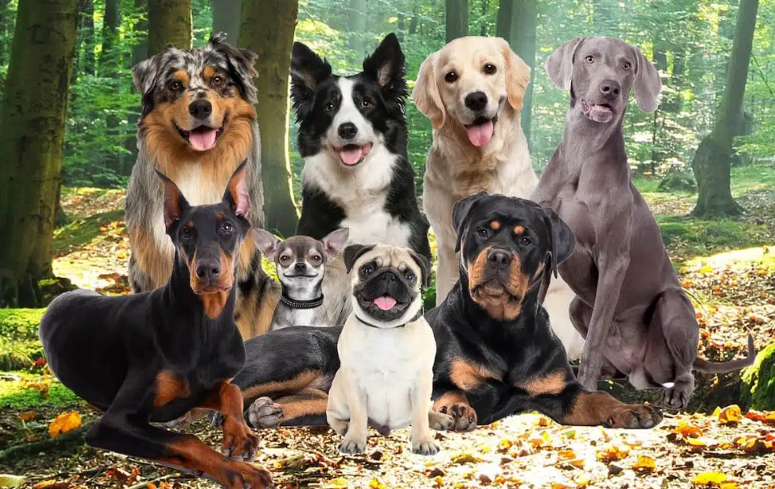

<body>

<div class="container">
  <div class="main-container">

    <div class="content-container">
      <div class="image-container">
        <h1>What Are The Most Popular Dog & Puppy Breeds?</h1>
        
      </div>

      <div *ngIf="!isFullTextShown">
        <p>What are the most popular dog breeds in the US? Depends who you ask! From Retrievers to German Shepherds,
          there are many fan favorites that come to mind. But such a question can be quite subjective — what does a
          popular pet mean to you? Good looks, charm or trainability perhaps?</p>
        <p> The all-American dog doesn’t have to be ones you see in the movies. Those characteristics can cover a wide
          variety of breeds. So how do you find the right four-legged friend? Consider the following additional factors
          as you research family dog breeds, and keep in mind that the best family dogs are truly unique to you and your
          needs.</p>
        <p> Some popular breeds of dogs love to run outside and can be independent; others are perfectly content
          snuggling indoors. The best dog for you will vary depending on your needs, so consider whether you and your
          family are looking for an energetic hiking buddy or an affectionate calmer personality.</p>

        <button (click)="toggleTextDisplay()" class="show-button" mat-button>Show More</button>
      </div>
      <div *ngIf="isFullTextShown">
        <p>What are the most popular dog breeds in the US? Depends who you ask! From Retrievers to German Shepherds,
          there are many fan favorites that come to mind. But such a question can be quite subjective — what does a
          popular pet mean to you? Good looks, charm or trainability perhaps?</p>
        <p> The all-American dog doesn’t have to be ones you see in the movies. Those characteristics can cover a wide
          variety of breeds. So how do you find the right four-legged friend? Consider the following additional factors
          as you research family dog breeds, and keep in mind that the best family dogs are truly unique to you and your
          needs.</p>
        <p> Some popular breeds of dogs love to run outside and can be independent; others are perfectly content
          snuggling indoors. The best dog for you will vary depending on your needs, so consider whether you and your
          family are looking for an energetic hiking buddy or an affectionate calmer personality.</p>


        <h1> Which dog breed is most commonly owned? </h1>
        <h2> Top dog breeds based on characteristics</h2>

        <ul>
          <li><b> Temperament</b>: Does the idea of hiking a trail excite you? Or do you lead a more relaxed lifestyle,
            perhaps nestled in a book? Different dogs have unique personalities, just like you. Consider a pet whose
            personality and temperament will blend well with your family’s. The best dogs for families—naturally—will
            vary depending on the family, so consider whether your crew is looking for a hiking buddy or a furry snuggle
            bug.
          </li>
          <li><b> Size:</b> Tiny dogs, like Yorkshire Terriers are energetic but typically require less exercise than
            larger
            dogs, like Labrador Retrievers. Small dogs might be satisfied with playtime around the house. Whereas, large
            dogs require regular walks or even jogs over a longer distance, at the very least a big backyard. Consider
            your preferable level of activity when deciding on the size of your potential new pet.
          </li>
          <li><b> Care Requirements:</b>Have you thought about grooming? Who will take the dog for walks? Consider your
            potential pet’s needs and whether or not your family can meet them before committing to that adorable furry
            face.

          </li>
        </ul>

        <h1>Wondering what the top 10 dog breeds are?</h1>
        <h2> French Bulldog</h2>
        <p>This intelligent, well-behaved, playful breed first became known in France. Lucky for us, this affectionate,
          loveable breed grew in popularity across the globe. The French Bulldog is an active and alert, they also
          require minimal exercise.</p>
        <p> Known for their signature button noses and exaggerated ears, the French Bulldog is a fan favorite and lots
          of fun to be around. They are known for playful personalities and adorable snoring – which only adds to their
          charm, who doesn’t love a good nap?

        </p>
        <p> Grooming needs are minimal, due to their fine, smooth coat. But don’t forget French Bulldogs will need their
          adorable facial wrinkles cleaned regularly with a damp cloth.

        </p>

        <h2> Cavalier King Charles Spaniel</h2>
        <p> King Charles loves companionship and shows it with an eager-to-please attitude. He’s good with other pets
          and friendly to anyone he meets. These family-friendly dogs don’t need extensive exercise, but they do love to
          sniff, explore and play outside from time to time.
        </p>

        <h2> Pug</h2>
        <p> Staunchly silly and easily trainable, Pugs have earned a reputation as one of the best small dogs for kids.
          They’re patient and steady but never take themselves too seriously. Because of their short noses, care should
          be taken with Pugs in the heat. They may also generally wheeze and snore but that just enhances their cuteness
          factor.

        </p>

        <h2> Golden Retriever</h2>
        <p> There’s a reason they make incredible service dogs. Goldens are gentle, smart and enthusiastic, and their
          playful side makes them great with kids too. Golden Retrievers are strong and athletic, and they have an
          active nature, so make sure they get plenty of exercise.

        </p>

        <h2> Beagle</h2>
        <p> Friendly, calm and gentle – great qualities in friend of the human or animal kind, but we’re describing the
          beautiful Beagle. Their cheerful nature is part of the reason this pup tops the list, often making great
          family pets.

        </p>

        <p> They are moderately energetic, enjoying a long walk or games with the kids. Beagles are patient. Originally
          bred as hunters, they are known to enjoy a trail and might bark or howl when overly excited. Also might have
          the insight to dig up holes in the backyard!

        </p>

        <h2> Poodle</h2>
        <p> Known for their intelligence, Poodles are attentive and adept at learning tricks and have a dignified
          demeanor. Poodles thrive on lots of mental stimulation. These kid-friendly dogs have hypoallergenic coats and
          love spending time in the water, making them excellent companions.

        </p>

        <h2> Boxer</h2>
        <p> Boxers are one of America’s favorite breeds and our top 10 list wouldn’t be complete without them. Patient
          and kind, Boxers love human interaction and are known as one of the best dogs protectors of family members,
          especially children. They’re also well-mannered with other household pets. Boxers like to run, so they’re
          great companions for jogs or long walks.

        </p>

        <h2> Labrador Retriever</h2>
        <p> Playful companions, excellent service dogs and intelligent to boot—is there anything a Labrador Retriever
          can’t do? Widely known as one of the best family dogs, these amiable pups are among the most popular in the
          United States. Labs need daily exercise, and love to retrieve and swim so they’d make a great companion for
          someone leading an active lifestyle.

        </p>

        <h2> Yorkshire Terrier</h2>
        <p> They say big things come in small packages, which rings true for the Yorkshire Terrier. Oblivious of their
          small stature, these dogs are always eager for adventure. Yorkies are busy and very inquisitive. Yorkies can
          achieve adequate exercise within the home but also require stimulation through games or some personal
          interaction. They appreciate short walks outdoors and enjoy the chance to safely explore.

        </p>

        <h2> Bulldogs</h2>

        <p> We’d recognize those wrinkles anywhere! Often favored for their stout frame and flatter faces, the Bulldog
          is often a fan favorite. Bulldogs are lovable and loyal companions. They have a positive disposition and
          welcome affection.

        </p>

        <p> Resolute and courageous, the breed is an excellent family companion. Be sure to provide extra care when
          exercising in warm weather because their short noses make them prone to overheating. Luckily the Bulldog
          requires minimal grooming and exercise.

        </p>

        <p> Enjoyed the list but didn't see one you were looking for? See thousands of pets looking for forever homes on
          Petfinder. After all, the most popular breed is simply the one you connect with.

        </p>
        <button (click)="toggleTextDisplay()" class="show-button" mat-button>Show Less</button>
      </div>
      <h2> 9 Dog or Puppy Breeds</h2>
      <div class="animal-grid">
        <div *ngFor="let dog of cuteDogs" class="animal-card">
          <a (click)="viewDogDetails(dog)">
            
            <h3 class="animal-name"> {{ dog.name }} </h3>
          </a>
          <hr>

          <button (click)="redirectToAnimalPage(dog)" class="animal-available" mat-button> View Adoptable Pets for This
            Breed
          </button>
        </div>
      </div>
    </div>
  </div>
</div>
</body>
